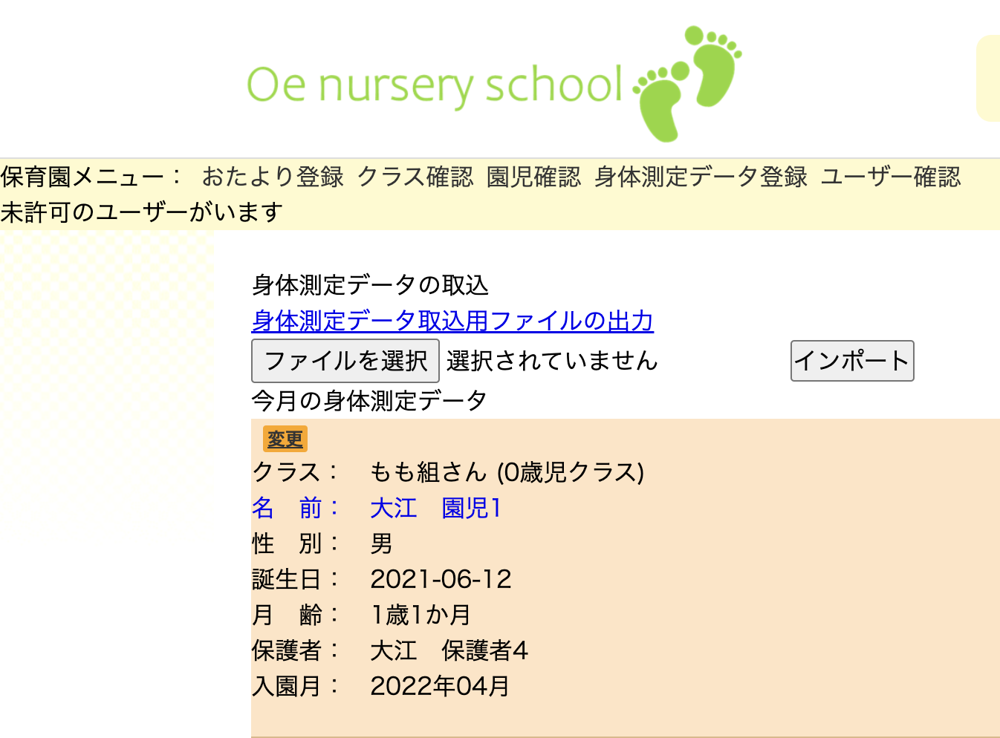

Tsumiki-note（保育園アプリ）
開発環境
Ruby / Ruby on Rails / MySQL / GitHub / Heroku / Visual Studio Code / Postcode JP API / Trello
-
概要
制作時間 66時間 URL https://tsumiki-note.herokuapp.com/ ID TsumikiUser PASS 0404 -
動作テスト
テスト用アカウント
mail 保育士：test1@test.com
保護者：test4@test.comPASS 保育士、保護者：000000y
OUTLINEアプリケーションの概要
オリジナルアプリケーションとして、保育園のおたより帳アプリを開発しました。
主な機能は、保育士、保護者2権限のユーザー登録機能、おたよりの共有機能、身体測定データの共有機能です。
ログインして、トップページにアクセスすると、保育園のジャンル毎のおたよりの一覧が表示され、それをクリックすると、おたよりを見ることができます。
また、成長記録にアクセスすると、自身の子供の身体測定データを閲覧することができます。身体測定データは保育士が登録でき、一括で保存するためのシステムも開発しています。
-
開発に至った経緯
息子の通う保育園では、おたよりを紙で発行し、毎月保育士が連絡帳に挟み込んでくださっています。
また、私たち保護者は予定や献立表を見るためにおたよりを保管しなくてはいけません。そういった情報をデータでやり取りすることで、より短時間で雑事を終わらせ、子供たちとの関わる時間に充てたい、充ててほしいという願いを込めて作成しました。
-
開発で工夫したこと
このアプリは、保育士と保護者の時間短縮を最大の目的としているため、極力入力やクリックが少なくなるように下記の工夫を行いました。
1.身体測定データは、息子の通う保育園同様に他のソフトウェアなどでも管理していることを想定し、連携しやすいようにCSVでの取込ができるように。
2.トップページにジャンル毎の最新おたよりを設定することで、スムーズにおたよりを閲覧できるように。
3. 新規ユーザー登録時の住所検索 PostcodeJP APIを導入することで、住所の入力の手間を省き、間違い防止に努めたこと。
4.保育士メニューの表示については、保育士の行う機能を1箇所に固めることで、素早く作業が行えるように。 また、新たなユーザーがいる場合、すぐに気づくことがきるよう保育士メニューに未許可ユーザーの表示を設定しました。 -
今後実装したいと思っていること
保護者は、PCよりスマートフォンを利用することを想定し、Androidアプリの開発を検討しています。現在、開発に向けた学習を行なっています。
また、前述で、連絡帳自体をアプリに組み込むことで、荷物の削減や細かなやり取りができると考えています。